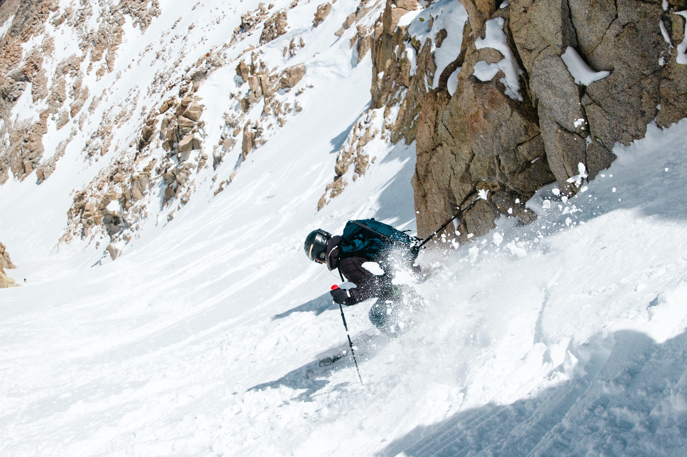
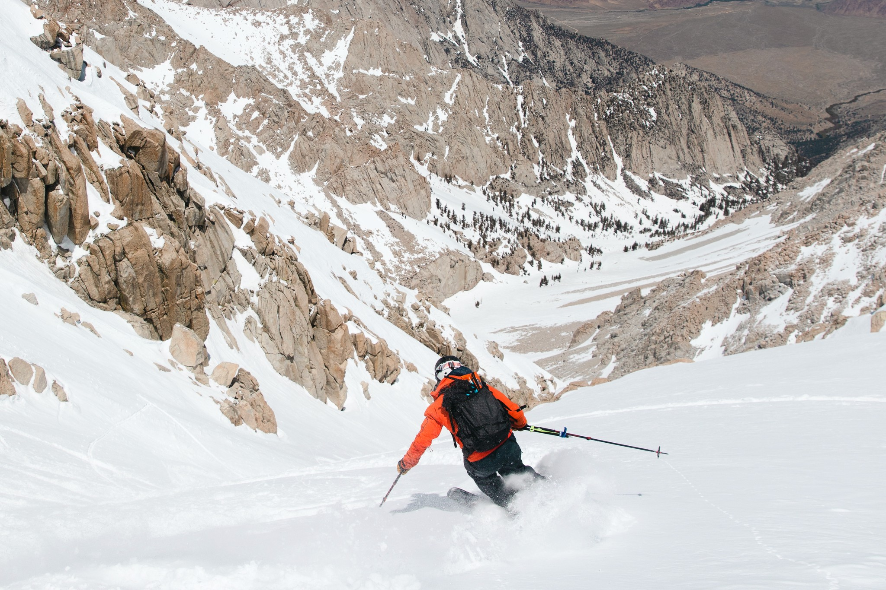
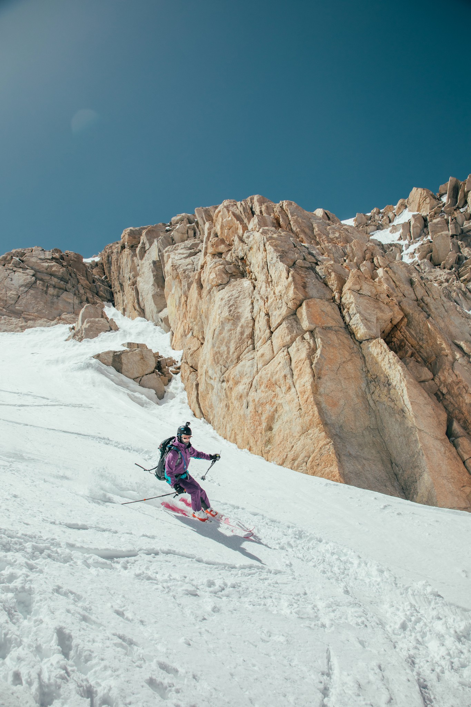
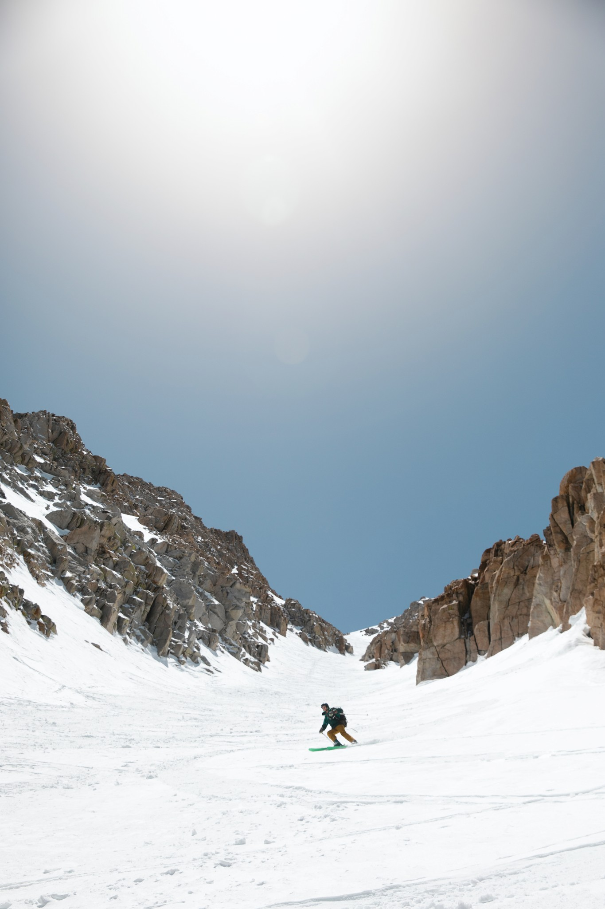
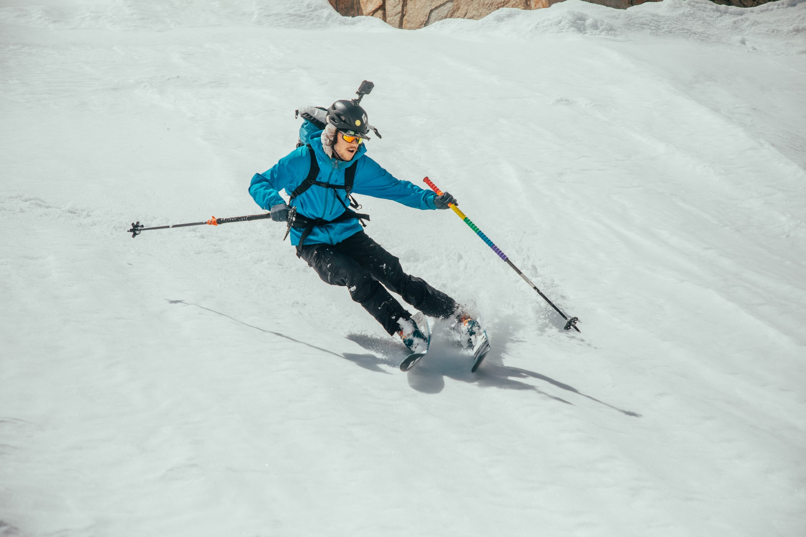
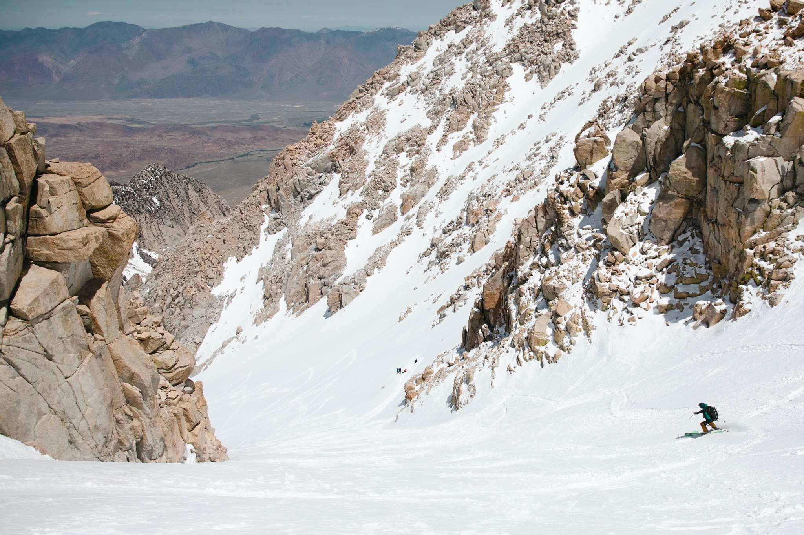
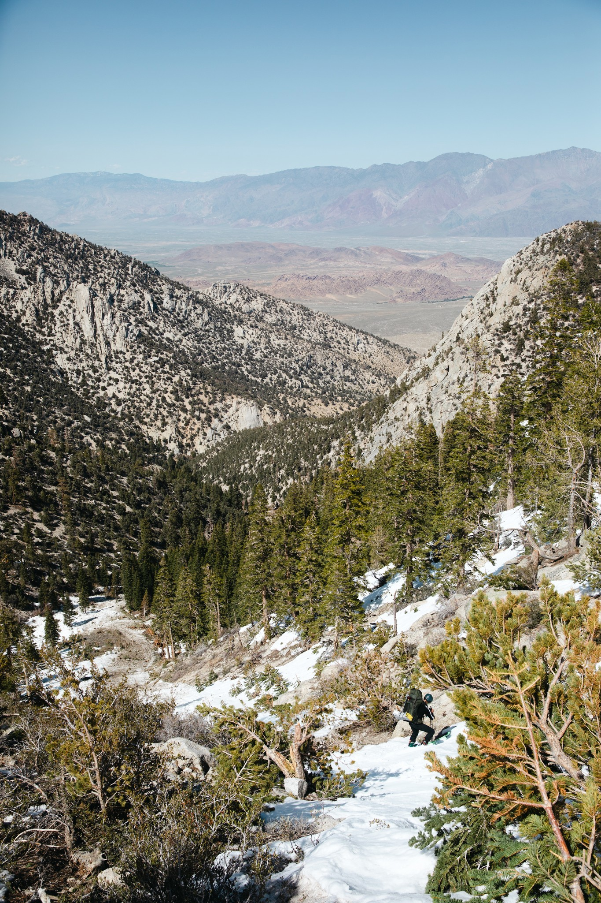
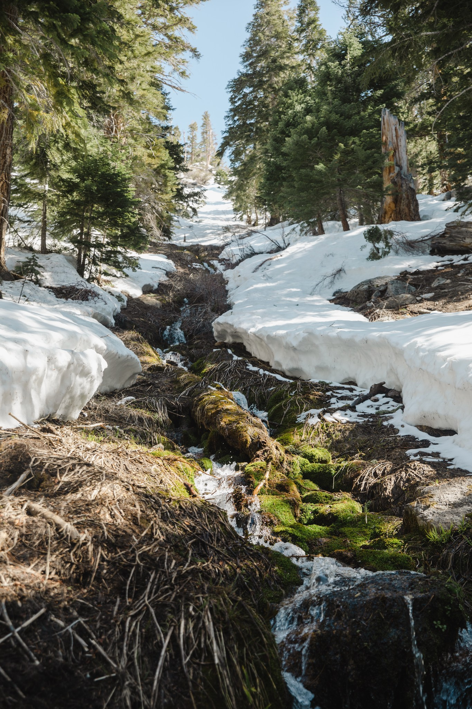
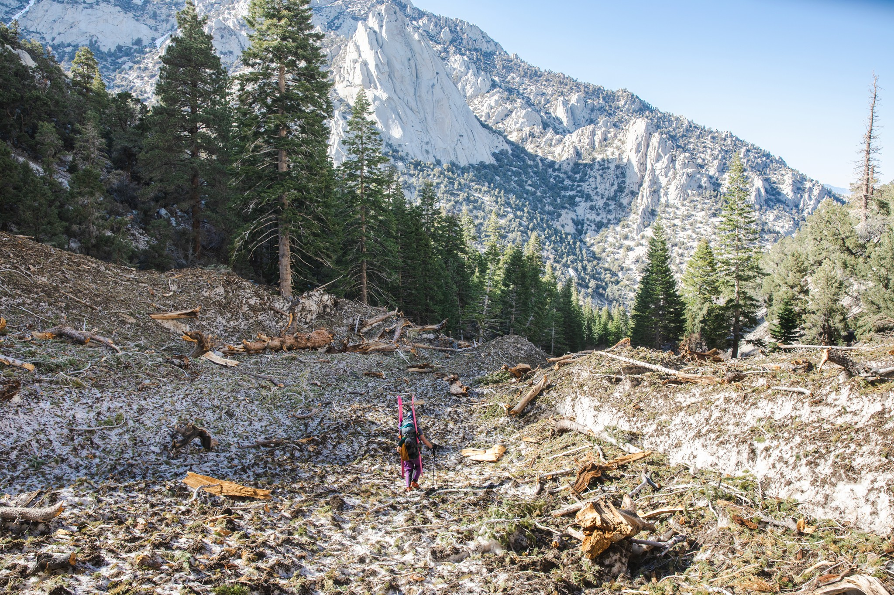

N.E. Couloir of Mt. Langley
Hunting for spring corn in an iconic Eastern Sierra granite hallway
As much as I love a good Tahoe winter, spending the late spring season ski touring in the Eastern Sierra has become one of my favorite traditions in the past few years. As winter starts thawing out and the birds begin to return to Tahoe, I find myself dusting off Nate Greenberg and Dan Mingori’s classic guidebook to this epic zone and pining for a migration of my own down to the land of giants.
Last year in April and May, my buddies and I spent our weekends exploring the northern reaches of the Eastern Sierra: Leavitt Peak, Dana Couloir and The Matterhorn. But given the fact that the 2022-23 season was so epic, it seemed like this was a great year to head further south and take advantage of the historic snowpack. After the boys in the lab crunched the numbers, double checked the forecast, and cross-referenced the forums, we set our sights on Mt. Langley
Mt. Langley is a gorgeous and proud peak that rises prominently above the town of Lone Pine in the Owens valley 10,000 feet below. Ever since I laid eyes on the photos of the fine granite hallway of its Northeastern Couloir in the guidebook, I knew we had to try and ski it. In 2021, Alex , Josh and I had hiked to the summit of Langley after a backpacking trip through the Miter Basin and I couldn’t wait to get the crew together and try to ski to harvest some corn on a late spring trip.

Marking the unofficial end to the High Sierra, Mt. Langley is the southernmost fourteener in the range and the last of the big peaks around… The Northeast Couloir of Mt. Langley is an incredible line on a beautiful peak, and is clearly visible from various points along Highway 395 and the Whitney Portal Road. As an added benefit, this line can be skied from almost right off the summit, providing roughly 3500 feet of fall-line skiing back into Tuttle Creek — Nate Greenberg and Dan Mingori, “Backcountry Skiing California’s Eastern Sierra”
In 2022, our group was fully comprised of Californians, but this year our team was much more dispersed. Our crew was comprised of 6 ski bums from the Sonoran desert, Northern California, and the Pacific Northwest, so a more southern objective was merciful for Andrew and Karl, who were driving in from Phoenix. Around 9 am, I picked up my friends Alex and Noel in Reno, who had flown in from San Francisco and Seattle. We lazily made our way down the 395, stopping to pick up last minute gear at REI and snacks from the legendary Schaat’s Bakery in Bishop.
After picking up dinner at Mercado Mexico, we headed south to meet the gang at a campsite Matt picked out within walking distance of the trailhead. Our dreams of a relaxing early dinner in camp were quickly thwarted however, when smoke started filling my old Subaru’s cabin as we started up the steep grade above the Alabama Hills. It has suffered a slow unidentified oil leak for a while, but this was the first time that she actively burned oil. We ate our sad dinner by the side of the road while we waited for Karl and Andrew to arrive. After getting the all-clear from Karl, we limped the last few miles into camp. We had heard that the dirt road between the Tuttle Creek campground and the trailhead was pretty rough, but our stock station wagons with all terrain tires made it up the rutted out, sandy road with just a few spots that needed scouting and some minimal pushing. After we got our campsite set for the night, we packed our gear and chatted about the itinerary for the weekend ahead while drinking a few beers and watching a full moon rise dramatically over the valley below.

Because our mission for the day was just to get to base camp, we were able to get a luxuriously late start. Around 8:30, we locked the cars and started walking up the dirt road towards the Tuttle creek trailhead. From the very bottom of the trailhead, we could see our objective looming impossibly high above us. There’s just something a little strange and demoralizing about walking up a sandy, dusty trail past prickly pear cacti in 80 degree heat with skis on your back. Soon, the stunning stone remnants of the Tuttle Creek Ashram came into view. The abandoned structure was built in the 1920s by Franklin and Sherifa Merrell-Wolff to serve as a spiritual center for their religion called the “Assembly of Man”


Around 7,700 ft, the trail crosses the creek and climbs a short distance to the Ashram. We didn’t have time to tour the building unfortunately, so this marked the end of our marked trail. After setting out cross country for less than a few minutes, we finally hit the snow line when we came across the largest avalanche debris field I ever saw. From here, the guidebook’s description of the approach wasn’t very helpful and we had to do some backtracking past a series of waterfalls coming into the drainage from the South.


Eventually, we booted up to a small ridge at around 8600 ft with our first killer views of the region. From here, we thought we could traverse across the southern side of the drainage through some trees before getting to an obvious bench. However, we probably should have taken a closer look at our topo maps. What we thought was going to be an easy skin turned out to be a slushy and steep sidehill that soon became impossible to skin. We transitioned to booting and very slowly made our way across the south side of the drainage while avoiding some local steep sections and terrain traps.


Our morale improved dramatically when we finally made the transition back to skins. We hammered out our last few miles of steady climbing and rolled into camp around 5pm. We found a nice spot our friend Ben Banet told us about around 10,400 feet in a beautiful grove of what appeared to be foxtail pines. When the packs came off, we started digging platforms for our tents before boiling water and making dinner. Our friend group has a tradition of bringing ridiculous and unexpected items on our backpacking trip, and this time I was extremely proud of my “x-factor”: beluga caviar I bought for a steal at grocery outlet in the spur of the moment. It was a great pre-dinner treat that paired nicely with our happy hour of mezcal and whiskey.


As the sun set, we were treated to incredible views and a mercifully still evening. From our camp, the Northeast couloir was clearly visible. Given the fact we were still over 3,000 ft from the summit, it felt like our eyes were playing tricks on us. The sheer size of the run was difficult to wrap my brain around because it looked like it couldn’t have been more than 1,500 ft to the top of the line. But I figured that the dimensions were hard to fathom due to just how wide the couloir actually was.


Even though I was dreading it, the 5am wakeup wasn’t too rough. With a 20 degree quilt, new liner and double pads, I stayed plenty warm in Matt’s Megamid. We quickly got water for coffee brewing, packed up and started skinning towards the line.


Since the snow was so firm, we started with ski crampons on which helped us make consistent progress. The views were absolutely stunning as we gained elevation. The south ridge of Peak 13619, Tuttle pass and the countless other nameless ridges and granite spires to the north began to shrink as we climbed higher and higher. We were able to make it to the apron of the couloir using ski crampons (around 12,000 ft) before transitioning to bootpacking.


As we started our ascent up the massive couloir, we constantly evaluated the conditions. We had lost some time by taking a long transition break and the quality of the snow was rapidly changing. Thankfully, it hadn’t gotten as hot as forecasted, but certain aspects of the approach began to get very slushy and we were increasingly worried about the possibility of triggering a wet loose slide. After testing different portions of the line, we realized the center of the couloir had the best snow, so we took turns setting the booter. The altitude had really caught up with us and we had to take frequent breaks as we french stepped our way higher.


Soon, the biggest crux of the trip came into view. About halfway up the line, we came face to face with a massive cornice that had perched itself high atop a side chute that led into our couloir. We had previously heard about a “train car” sized cornice in the weeks leading up to the trip. We had also heard from a friend that this overhead hazard had already fallen. Perhaps a portion had, but it was still plenty big to scare me. Once we got a good look at it, we kicked it into high gear and spread out to try and reduce our risk. We were thrilled once we were safely out of its potential path, but still knew that we would have to face it on the way down.

After a few hours of consistent hard climbing, we topped out at the start of the line. Such an incredible view! We thought about continuing a bit further, but after re-evaluating with our team, we decided to transition before reaching the true summit, which was a bit of a bummer. The last time I summited with Alex and Josh, I loved seeing the dramatic view of the Whitney zone and experiencing the dizzy thrill of looking down into the Tuttle creek drainage from such a prominent point. But it was certainly the right call, especially with the warming conditions and the looming threat of the remaining cornice.


It was super fun watching the rest of the crew enjoying their very well-earned turns down the couloir. I started skiing a few years ago, and even though the line was very wide and not crazy steep, I still had a hard time getting past my fear of falling. The fact that this was my first time skiing with an improvised whippet and that I was nervous about goring myself probably didn’t help things. So I skied it very conservatively. I was the last to go and the conditions were pretty variable towards the top but further down, I was able to open it up a bit and have some fun.






Once we regrouped at the apron, I looked back up at what we just skied and felt an immense combination of gratitude, relief and stoke that it all worked out. I was thrilled to be able to be in such an incredible wilderness environment with good friends on such a great day and I didn’t want to take anything for granted. The ski down to camp was a goofy, steezy party lap but the corn conditions got even better after we packed up and started making our way back to the treeline.
All good things must end, however. As soon as we descended back into the drainage, our routefinding issues began. We ended up descending an avalanche path that was just absolutely torn up with the wreckage of thousands of massive pine trees. We tried to stay high and traverse back to what we thought would be more open territory, but the entire remainder of the ski back to the trail was filled with dodging creeks, deadfall and just extreme unpleasantness. All of us were beat when we got back to the bag we had stashed our approach shoes in.




The late afternoon light was a welcome companion as we trudged back down the trail, past the Ashram and back down into the sandy Owens valley. After an emergency bathroom break, we all broke down our base camp and said our goodbyes until next year’s high Sierra sufferfest.